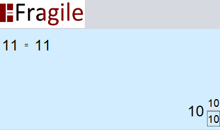
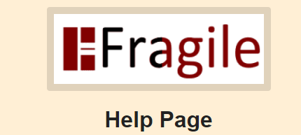
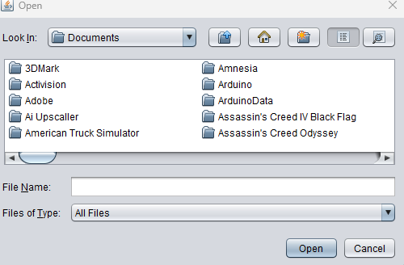

Wenn Sie den Header von Fragile betrachten, sehen Sie 7 verschiedene Dropdown-Menüs zur Auswahl. Das erste davon ist das Datei-Dropdown-Menü. Wenn Sie über das Datei-Dropdown-Menü fahren, wird Ihnen eine Beenden-Schaltfläche angezeigt. Diese Schaltfläche schließt das Programm. Eine alternative Möglichkeit, Fragile zu schließen, besteht darin, einfach das Fenster oben rechts im Rahmen zu schließen. Es gibt auch eine Schaltfläche mit der Aufschrift Neuer Taschenrechner. Diese Schaltfläche öffnet eine neue Instanz des Taschenrechners. Schließlich gibt es eine Sitzung drucken-Schaltfläche, mit der Sie Ihre aktuelle Taschenrechnerverlaufssitzung auf ein Papiermedium drucken können.
Erforschen Sie den "Mode"-Header in Robust mit zwei Kontrollkästchen. Aktivieren Sie Unrichtige Brüche für eine breitere Palette von Bruchdarstellungen. Aktivieren Sie Reduzierte Brüche, um Bruchergebnisse zu vereinfachen und zu optimieren. Diese Optionen im Abschnitt "Mode" ermöglichen eine Anpassung Ihrer mathematischen Ausdrücke.
Schauen Sie sich das "Ansicht"-Menü an. Es gibt eine coole Funktion - aktivieren Sie das Kontrollkästchen Kreisdiagramme. Ihre Ergebnisse verwandeln sich in coole Kreisdiagramme. Es befindet sich direkt im Abschnitt "Ansicht" und verleiht Ihren Daten ein ansprechenderes Aussehen.

Gehen Sie zum "Stil"-Menü. Hier können Sie mit der Darstellung von Brüchen herumspielen. Sie haben Optionen wie Strich, Schrägstrich oder Solidus. Gehen Sie zum Abschnitt "Stil" und gestalten Sie Ihre mathematischen Ausdrücke nach Ihren Wünschen.

Brauchen Sie Hilfe? Klicken Sie auf "Hilfe". Dort finden Sie einen Über-Abschnitt mit Versions- und Entwicklerinformationen sowie eine Seite mit Hilfedateien für alle Fragen, die Sie haben könnten. (Die aktuelle Seite).
Im "Shortcuts"-Menü können Sie auf ein eigenes Fenster zugreifen, um Tastenkombinationen zu ändern. Diese Funktion ermöglicht es Ihnen, bestehende Tastenkombinationen anzupassen oder neue nach Ihren Wünschen zu erstellen. Wenn nötig, gibt es auch eine Option, die Tastenkombinationen auf ihre Standardkonfigurationen zurückzusetzen.

In den "Präferenzen" können Sie Einstellungen effizient über den Datei-Explorer speichern und laden. Dieses Menü bietet auch eine praktische Funktion zum Berechnen von Zahlen mit Tausendertrennzeichen.

Hier haben wir die Hauptoberfläche für den gemischten Bruchrechner. Wie die meisten Taschenrechner verfügt er über eine Tastatur aus Soft-Tasten, mathematische Operationen und eine "="-Taste. Dieser Taschenrechner verfügt auch über zusätzliche Operationen, die auf einem Taschenrechner normalerweise nicht zu finden sind, wie einen Booleschen Ausgabeoperator, eine Vereinfachungstaste und eine Bruch- / Fokusschaltfläche.

Da dies ein gemischter Bruchrechner ist, benötigen wir eine Möglichkeit, diese Brüche zu erstellen. Die Methode, die Fragile dafür verwendet, besteht darin, dem Benutzer zu ermöglichen, den Fokus darauf zu legen, welche Zahl im Bruch geändert werden soll. Wie durch das Rechteck im unten gezeigten Anzeigerahmen angezeigt.

Durch Drücken der Bruch-Taste wird das Rechteck zum Zähler bewegt, dann zum Nenner, dann zurück zur Position des Ganzzahls. Der Benutzer kann jede Zahl beliebig oft ändern, bevor er sich entscheidet, eine Berechnung durchzuführen.
Um mit einer Berechnung zu beginnen, müssen Sie die erste gemischte Fraktion eingeben, die berechnet werden soll. Füllen Sie dazu den Zähler und den Nenner mit der zuvor erwähnten Fokus-Funktion aus.

Dies ist ein Beispiel für eine gültige Eingabe. Bei ungültiger Eingabe wird dem Benutzer diese Fehlermeldung angezeigt.

Nachdem eine gültige Eingabe erfolgt ist, wählen Sie die mathematische Operation aus, die durchgeführt werden soll. (Die aufgeführten Operationen sind: Addition, Subtraktion, Multiplikation, Division, Median, Ungleichheiten und der Boolesche Operator).

Nach Auswahl der mathematischen Operation geben Sie die zweite gemischte Fraktion ein, die berechnet werden soll. Wiederholen Sie den ersten Schritt dieses Prozesses. Nachdem die zweite Fraktion eingegeben wurde, drücken Sie die "="-Taste, um den Ausdruck auszuwerten. Das resultierende Ergebnis wird wie unten dargestellt angezeigt.

Die unten aufgeführten Tastenkombinationen ermöglichen es Ihnen, jedes Menüelement einfach auszuwählen, ohne die Hand von der Tastatur zu nehmen! Und zusammen mit den Tastenkombinationen ermöglicht Ihnen Fragile auch das Eingeben von Zahlen in den Taschenrechner mit Ihrem Ziffernblock.